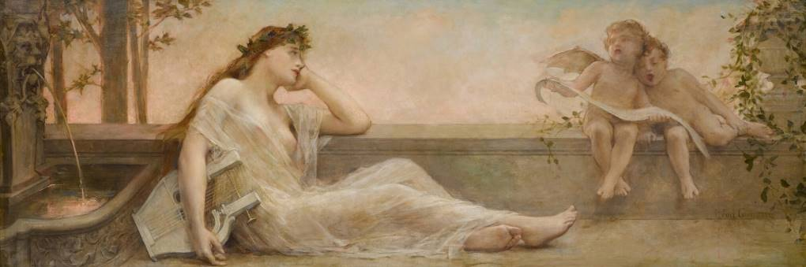
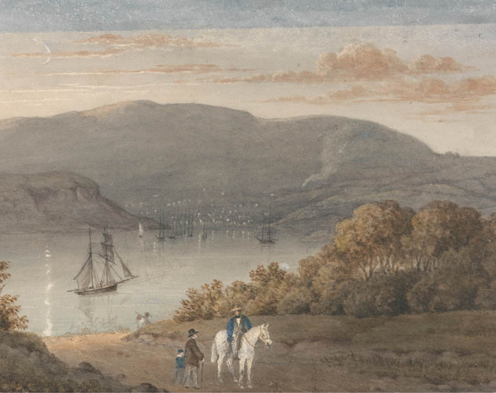
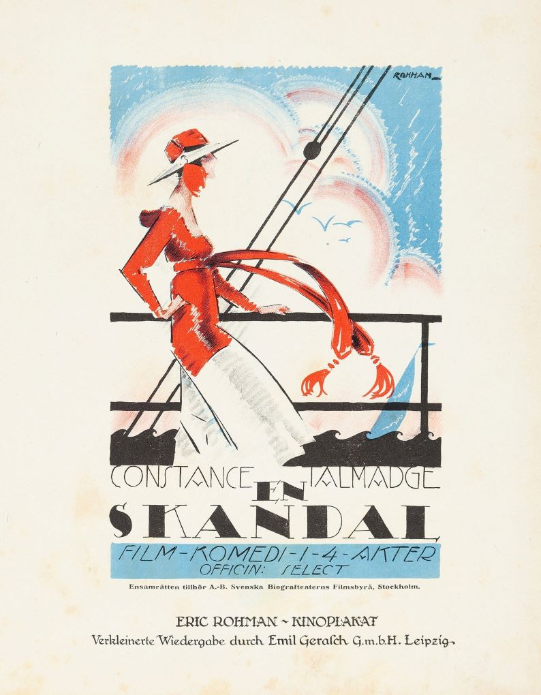

Emergentes Gallery
“Color is my day-long obsession, joy and torment.”
Claude Monet
Léon François Comerre - Figurative
In this exhibition we can understand how Comerre explores the representation of the figurative with his portraits of beautiful women and the use of the Oriental themes.
French, 1850 - 1916
Thomas Bradshaw - Landscape
Even though there isn't much information about Bradshaw, we can still appreciate his magnificent watercolor landscapes.
English, born in 1767
Eric Rohman - Posters
For this exhibition, we are gonna experience posters that express different scales, colors and histories.
Swedish, 1891 - 1949
Come have an amazing experience
in the world of arts
Temporary exhibition

Reijer Stolk
Reijer Johan Antonie Stolk was a graphic artist , painter , sculptor and inventor. Stolk was born on Java (Indonesia). He migrated from East Java to the Netherlands between the ages of three and twelve. In 1910 he enrolled in the Applied Arts School in Haarlem. In 1930 he embarked on a trip to the Gold Coast and Nigeria to study patterns on clothing fabrics. This journey had a major impact on his artistic work.

“Etching is not putting down lines, as someone, who cannot do it himself, tells you to, or as he does it, but putting down lines for one's self that will print, that mean something to others, others who can see.”
- Joseph Pennell, Etchers and Etching